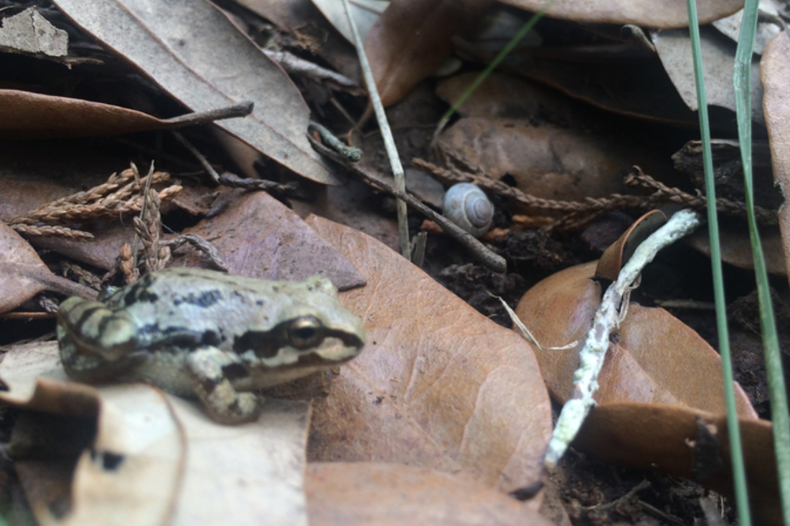

Can Pre-trained Vision and Language Models Answer Visual Information-Seeking Questions?
Yang Chen1,2*
Hexiang Hu1
Yi Luan1
Haitian Sun1
Soravit Changpinyo1
Alan Ritter2
Ming-Wei Chang1
1
2
(*: Work done when author was interned at Google Research)
InfoSeek, A New VQA Benchmark focus on Visual Info-Seeking Questions
Large language models have demonstrated an emergent capability in answering knowledge intensive questions. With recent progress on web-scale visual and language pre-training, do these models also understand how to answer visual information seeking questions? To answer this question, we present InfoSeek, a Visual Question Answering dataset that focuses on asking information-seeking questions, where the information can not be answered by common sense knowledge. We perform a multi-stage human annotation to collect a natural distribution of high-quality visual information seeking question-answer pairs. We also construct a large-scale, automatically collected dataset by combining existing visual entity recognition datasets and Wikidata, which provides over one million examples for model fine-tuning and validation. Based on InfoSeek, we analyzed various pre-trained Visual QA systems to gain insights into the characteristics of different pre-trained models.
Our Contributions
Collect and Annotate InfoSeek-Human: A large dataset with naturally collected visual info-seeking questions.
Construct InfoSeek-Wikidata: A semi-automated dataset with over 1 million {image, question, answer} triplets to support training and evaluation models on visual info-seeking VQA.
Experiment State-of-the-Art pre-trained vision-language models, large language models and their combination on the InfoSeek.
Peform in-depth analysis on such pre-trained models, and analyze the pros and cons for different models.
Unlocking the Power of Pre-trained Vision-Language Models
Fine-tuning on InfoSeek Elicits Knowledge to Answer New Real-World Data
Q: Which city is this hotel located in?PaLI: Pattaya ✔
Q: What year was this painting created?PaLI: 1877 ✔
End-to-end Model vs Two-stage Pipeline Model
We studied End-to-end model (PaLI) vs Pipeline Systems (Entity Recognition + Language QA)
End-to-end Models with No Knowledge Base (KB)
Pipeline Systems with Knowledge Base (KB)
Discovering Pre-trained Visual-Language Models' Strengths and Weaknesses
Good at Surface-level Questions, but Missing Deeper Knowledge

Q: Which region is this animal exclusively found?PaLI (end-to-end): U.S.A ✔FiD (pipeline): Brazil ✘
Q: What country does this building belong to?PaLI (end-to-end): Brazil ✔FiD (pipeline): United Kingdom ✘
Q: What was the date this type of aircraft took the first flight?PaLI (end-to-end): 1955 2 22 ✘ FiD (pipeline): 1981 September 26 ✔
Q: What is the altitude of this building measured at meters above sea level?PaLI (end-to-end): 3800 ✘ FiD (pipeline): 2430 ✔
Special Thanks
We thank Jialin Wu, Luowei Zhou for reviewing an early version of this paper. We thank Xi Chen for providing different variants of PaLI pre-trained checkpoints. We also thank Radu Soricut, Anelia Angelova, Andre Araujo, Vittorio Ferrari for valuable discussions and feedback on the project. We thank Huiwen Chang and the Muse Team for providing their website template. Yang Chen is partially funded by the NSF (IIS-2052498).